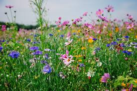
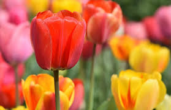

A Beautiful Introduction to Flowers
Flowers have captivated humanity for centuries with their beauty, fragrance, and symbolism. From the delicate petals of a rose to the vibrant hues of a sunflower, flowers bring joy and color to our world. This website is dedicated to exploring the fascinating world of flowers, offering insights into how to cultivate them and highlighting some remarkable floral facts.
Whether you're a seasoned gardener or just starting to appreciate the beauty of blooms, we hope you find valuable information here.
How to Grow Your Own Beautiful Flowers
Growing flowers can be a rewarding experience. Here are some general tips to get you started:
- Choose the Right Flowers: Consider your local climate, soil type, and the amount of sunlight your garden receives. Some flowers thrive in full sun, while others prefer shade.
- Prepare the Soil: Most flowers prefer well-draining soil that is rich in organic matter. Amend your soil with compost or other organic materials if needed.
- Planting: Follow the specific planting instructions for the type of flower you are growing. This usually involves digging a hole of the appropriate size and depth, placing the seed or seedling, and covering it with soil.
- Watering: Water your flowers regularly, especially during dry periods. The amount of water needed will vary depending on the flower type and the weather conditions. Generally, it's better to water deeply and less frequently than shallowly and often.
- Sunlight: Ensure your flowers receive the appropriate amount of sunlight. Most flowering plants need at least 6 hours of sunlight per day.
- Fertilizing: Some flowers benefit from regular fertilization. Use a balanced fertilizer according to the package instructions.
- Deadheading: Remove spent or faded flowers to encourage more blooms.
- Pest and Disease Control: Be vigilant for signs of pests or diseases and take appropriate action if necessary.
Remember that different types of flowers have specific growing requirements, so always research the particular flowers you are interested in growing.
All About the Cheerful Tulip
Tulips are one of the most popular and recognizable flowers in the world. Known for their vibrant colors and elegant shapes, they are a classic symbol of spring.
Fascinating Facts about Tulips:
- Tulips are native to Central Asia and Turkey, not the Netherlands as many might think. They were introduced to Europe in the 16th century.
- There are thousands of different tulip varieties, with a wide range of colors, shapes, and sizes.
- Tulips are perennial plants that grow from bulbs.
- The petals of a tulip are actually modified leaves called tepals.
- Tulips continue to grow a bit after they are cut and placed in a vase.
How to Grow Stunning Tulips:
To enjoy beautiful tulips in your garden, follow these steps:
- Planting Time: Tulip bulbs should be planted in the fall, about 6-8 weeks before the ground freezes. This allows them to establish roots over the winter.
- Location: Choose a sunny spot that receives at least 6 hours of sunlight per day. Tulips also prefer well-draining soil.
- Soil: Amend heavy clay soil with sand or compost to improve drainage.
- Planting Depth: Plant bulbs pointed end up, about 4-6 inches deep and 4-6 inches apart.
- Watering: Water thoroughly after planting. During the fall and winter, natural rainfall is usually sufficient. Water again in the spring if the weather is dry.
- Fertilizing: You can fertilize tulips in the fall at planting time and again in the early spring when the shoots emerge. Use a balanced bulb fertilizer.
- Deadheading: Once the flowers fade, remove the flower head to prevent the plant from producing seeds, which can weaken the bulb. Leave the foliage to die back naturally, as this helps the bulb store energy for the next year's bloom.
- Lifting Bulbs (Optional): In warmer climates or if you want to ensure consistent blooms, you can lift the tulip bulbs after the foliage has died back, store them in a cool, dry place over the summer, and replant them in the fall.
Interest of Flowers

Flower Name Game
Learn the names of flowers by playing flower wordle.
Other Important Information About Flowers
Pollination
Flowers play a crucial role in the ecosystem through pollination. They attract pollinators like bees, butterflies, and hummingbirds, which help in the reproduction of plants.
Flower Symbolism
Different flowers often carry symbolic meanings. For example, roses are often associated with love, while lilies can symbolize purity and beauty. Understanding flower symbolism can add another layer of appreciation to these natural wonders.
Cut Flower Care
If you enjoy bringing cut flowers into your home, remember to trim the stems at an angle and place them in fresh water with flower food to prolong their beauty.